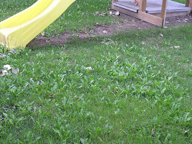

Here in western Idaho, amid the waning days of August, summer still announces its presence in afternoon temperatures that retreat just short of the century mark.
But the first signs of an overeager Autumn can be felt in the odd, lingering morning chill and seen in the subtle golden mellowness that colors the early evening sunshine.
The unfortunate resumption of government schooling has closed the too-brief parenthesis of liberty each summer provides to the inmates of that system. And I find that much of what little spare time I have is consumed by efforts to rehabilitate our yard, which takes up more than an acre in total area.
Owing to the vagaries of the weather, an abortive attempt to start a garden two years ago, the damage inflicted by a young but vigorous canine, and neglect reflecting circumstances beyond my control, the yard became a frightful and mysterious place.


No, this isn't our yard -- but it bears a striking resemblance to the way it used to look.Over the past month or so, as a welcome but unfamiliar normalcy has taken hold of our domestic affairs, I have been ministering to our yard with various landscaping implements, and doing what I can to aid the grass in its noble effort to reclaim the territory usurped by weeds.
And I've found myself impressed, once again, by how little it takes to restore a lawn. There are sections I've had to re-seed, and a few really tenacious clusters of weeds that will require some particular attention. But to my surprise, new grass now adorns a few isolated sections of the yard where no seeds had been sown.
From the time we moved here nearly three years ago, those sections were barren except for a dense overgrowth of weeds. Those once-drab areas are now blanketed in green. The grass seeds were dormant beneath the weeds, and resilient enough to take possession of the ground once it had been cleared with a weed-eater, mowed, and watered.
Quite naturally, the resurrection of our neglected yard prompted me to ponder the prospects for the recovery of liberty in our society, which is invaded in every conceivable way by the choking tendrils of state power. This overgrowth has happened not merely by neglect -- as is the case when a yard becomes ragged with weeds -- but more importantly by invitation.
A metaphor for our times: Here we see a foreclosed home, its untended yard surrendered to weeds.

People have been seduced into believing that they can live in symbiosis with the State that is killing what little liberty and prosperity we still enjoy. We have succumbed to the lure of what Bastiat called "institutionalized plunder," fallen prey to the temptation to employ the State's coercive power to live at the expense of others. And now we've reached a point where a simple weeding, even a thorough one, won't suffice.
Something much more invasive, more catastrophic, will be required to beat down the State's overgrowth and clear the field so that freedom can flourish and genuinely civilized life can recover.
The unfolding economic collapse -- which implicates every significant institution of the evil system that rules us -- could be a providential catastrophe, if it is dealt with correctly. To put the matter simply, for our civilization to recover, the United States of America needs to become a "failed state."
That term conjures images of Somalia in the early 1990s, as tribal wolf-packs headed by small-bore thugs grandly calling themselves "warlords" plundered famine relief deliveries, leaving thousands to starve. But as we'll shortly see, there is more to what we might call the "Somali Model" than warlords and famine victims, and much of it could apply to reconstructing free society following the overdue collapse of the American State.
Between the 1960s and the early 1990s, Somalia was the "beneficiary" of huge loans from the World Bank; by 1987, 37 percent of the country’s GNP was derived directly from such loans. Siad Barre, the Marxist kleptocrat on whom the World Bank bestowed that beneficence, lived in opulent splendor even as the nation’s infrastructure rotted away.
Barre's regime collapsed in 1991, triggering a brief but bloody civil war among rival aspirants to succeed the tyrant. Starving Somalis offered irresistible opportunities for the purveyors of victim pornography, and saturation media coverage of the famine led to a US-led, UN-mandated "humanitarian" intervention in December 1992. That mission was soon redefined as a "nation-building" exercise -- that is, an effort to re-impose a standard-issue centralized regime on a fissiparous tribe-based society.
As it happens, the famine was under control before the military intervention began, and the effort to inflict a government on the Somalis led to a great deal of entirely gratuitous bloodshed. So the UN mission folded its tents and left the Somalis to muddle through without a government. And Somalis did more than merely muddle: After suffering horribly under a World Bank-subsidized central government, they flourished in a state-less society precisely because of the "neglect" of the "international community."
In Somalia, "the very absence of a government may have helped nurture an African oddity — a lean and efficient business sector that does not feed at a public trough controlled by corrupt officials," wrote Peter Maas in the May 2001 issue of The Atlantic Monthly.
Without the instruments of state coercion to misdirect investments and suppress initiative, private businesses sprang up like blades of grass suddenly freed from an oppressive overgrowth of weeds. This in turn encouraged the development of telecommunications, transportation, and shipping companies to serve the needs of the newly liberated private sector.
Internet cafes began to sprout in Mogadishu, which just a decade earlier had been the scene of astonishing bloodshed. Rather than re-building a state-controlled, taxpayer-financed police force, Somali businessmen hired private security firms to protect their investments and property.
"Mogadishu has the closest thing to an Ayn Rand-style economy that the world has ever seen -- no bureaucracy or regulation at all," wrote Maass in astonishment. "The city has had no government since 1991.... Somali investors are making things happen, not waiting for them to happen." In the stateless Somali economy, everything "is based on trust, and so far it has worked, owing to Somalia's tightly woven clan networks: everyone knows everyone else, so it's less likely that an unknown con man will pull off a scam."
"If the business community succeeds in returning Mogadishu to something resembling normalcy," concluded Maass, "it will have shown that a failed state, or at least its capital city, can get back on its feet without much help from the outside world."
Maass understates the case: Somalia's transformation would illustrate the ability of a stateless society to overcome the pernicious legacy left by decades of "help" from the so-called international community.

"The Americans are here to help us! RUN FOR YOUR LIVES!" Somalis, acquainted with Washington's practice of armed benevolence, take appropriate evasive action.
A World Bank study grudgingly admitted: "Somalia boasts lower rates of extreme poverty and, in some cases, better infrastructure than richer countries in Africa." This is almost certainly because it was not cursed with a World Bank-subsidized central government to poach the wealth created by Somalia's productive class.
Now, you just knew that the architects of international order simply couldn't allow that state of affairs to continue.
And sure enough, under the all-exculpating rationale provided by the "War on Terror," the Regime ruling us from Washington arranged for Somalia to be invaded by the vile government ruling the neighboring country, Ethiophia.
This crime was carried out in the name of "stabilizing " Somalia, with invading foreign troops deployed "in support of Somalia's fledgling transitional government," slaughtering thousands of civilians at a throw and driving the business community into exile.

New York Times correspondent Jeffrey Gettleman, who apparently fills that paper's Walter Duranty Chair for Collectivist Apologetics, did his considerable best in a seminal April 2007 report to depict Washington's surrogate aggression in Somalia as a necessary measure to beat down "raw antigovernment defiance."
As if that were, in some sense, a bad thing.
"They do not pay taxes, their businesses are totally unregulated, and they have skills that are not necessarily geared toward a peaceful society," wrote Gettleman in an all-but-audible tone of alarmed disapproval. His prose is drenched in scorn when describing Somalis seeking to profit in the private sector, but maintains his composure when describing how the transitional government arbitrarily closed and confiscated profitable businesses and hiked some taxes by as much as 300 percent. Gettleman uncritically quoted Abdullahi Yusuf Ahmed, the puppet ruler grandly calling himself Somalia's "transitional president," who described his political critics as "the guys bringing in expired medicine, selling arms, [and] harboring terrorists."
Gettleman buttressed that self-serving accusation with supposedly authoritative assessments from conveniently anonymous "Western security officials" -- you know, the kind people who arranged for Somalia to descend, once again, into murderous chaos, rather than permitting it to enjoy the benefits of state-less, spontaneous order.
By late 2007, thanks to the attention of Washington and its allies, Somalia's fledgling market economy was gone, and the country was once again on the brink of famine This is typical of the misery inflicted on much of the world by the Regime that rules us from Washington, and it is a small but potent illustration of why that Regime must die.
No, I'm not talking about tearing up the Constitution, although that document has no documented influence on the people who rule us. In fact, it can be plausibly argued that it is only through the death of the incumbent Regime that the constitutional republic that once existed here could be reborn. I am saying that the recovery and survival of human freedom is much more important than "saving" our present government or any of the collectivist institutions engrafted into the body of our constitutional system.
At some point, we'll have to bare our teeth.

Somalia may not seem to have a whole lot in common with the USA. One key similarity is found in the fact that the government ruling us, like that of pre-1991 Somalia, is propped up by foreign creditors who simply cannot continue to subsidize Washington forever.
Ending those subsidies would mean the immediate collapse of the Washington-centric system. Indeed, that is just one of many ways that collapse could come about.
Yes, that would be a terrifying thing. But no, it is not the worst thing that could happen: Such a collapse could clear the way for the seeds of freedom to take root and flourish. The worst thing would be for the current system to continue ripening in corruption and aggression until it finally brings about a catastrophic war that would, in societal terms, act like a particularly aggressive forest fire -- annihilating the seeds and sterilizing the soil, leaving behind a barren, lifeless moonscape.
Should that collapse come, Americans would have to adjust our living habits in some dramatic ways. We'd have to become re-acquainted with the virtues of local living, and find anew the kind of patriotism that is genuine love of a country, rather than an adolescent pride in the power of a government's killing apparatus. For American Christians this would probably mean abandoning the comfortable, consumerist religion peddled by mega-churches and learning the hard discipline of unconditional faith in God.
We would have to develop a species of toughness not presently in abundant supply. Many of our ancestors lived in state-less frontier communities, and Somalis were experiencing that blessing until they once again fell prey to Washington's murderous humanitarianism.
"Rugged individualism" is a phrase that falls easily from the fleshy lips of overfed, morally dissolute Republican talk radio shills. We may be given the opportunity to put that much-admired but seldom-exercised virtue in practice in order to rebuild a state-less -- which is to say, a genuinely civil -- society.
Obiter Dicta
My apologies, once again, for a prolonged absence. I'm in the middle of job-hunting, and would appreciate any help my good friends in Right-Blogistan could provide. Anybody with a solid lead is invited to contact me at WNGrigg (at) msn (dot) com.
All next week, I'll be filling in for the inimitable Alan Stang on his Republic Broadcasting Network program "The Sting of Stang." The program (broadcast nation-wide, and accessible on the internet) runs from 7:00-8:00 a.m. Central Time, and the call-in number is 800-313-9443.
There is a good chance I'll be publishing another book before the end of the year. Please stay tuned....
 On sale now!
On sale now!Dum spiro, pugno!
11 comments:
Mr. Grigg,
I'm sure the reformers during the Protestant Reformation, when they looked at the religious landscape, could have easily become overwhelmed by what they saw. They saw that the field before them was infested with weeds and not only weeds but ravenous wolves seeking to tear them apart. They also knew that there is a God in heaven that presides over man, and they knew that no one could stay His hand.
Your article bring this scripture to mind.
Proverbs 24
30I went by the field of the slothful, and by the vineyard of the man void of understanding;
31And, lo, it was all grown over with thorns, and nettles had covered the face thereof, and the stone wall thereof was broken down.
32Then I saw, and considered it well: I looked upon it, and received instruction.
33Yet a little sleep, a little slumber, a little folding of the hands to sleep:
34So shall thy poverty come as one that travelleth; and thy want as an armed man.
This seems to apply not only to our personal lives but our nation as well.
Mr. Grigg, I see the possibility of a liberty reformation, one where thinkers and writers will have great influence on the people. However, I believe it will only happen when the people are oppressed to that point where their only choice is to look to our Great God and Saviour Jesus Christ, without whom there is no true liberty.
Psalm 2
1Why do the heathen rage, and the people imagine a vain thing?
2The kings of the earth set themselves, and the rulers take counsel together, against the LORD, and against his anointed, saying,
3Let us break their bands asunder, and cast away their cords from us.
4He that sitteth in the heavens shall laugh: the LORD shall have them in derision.
5Then shall he speak unto them in his wrath, and vex them in his sore displeasure.
6Yet have I set my king upon my holy hill of Zion.
7I will declare the decree: the LORD hath said unto me, Thou art my Son; this day have I begotten thee.
8Ask of me, and I shall give thee the heathen for thine inheritance, and the uttermost parts of the earth for thy possession.
9Thou shalt break them with a rod of iron; thou shalt dash them in pieces like a potter's vessel.
10Be wise now therefore, O ye kings: be instructed, ye judges of the earth.
11Serve the LORD with fear, and rejoice with trembling.
12Kiss the Son, lest he be angry, and ye perish from the way, when his wrath is kindled but a little. Blessed are all they that put their trust in him.
Brother Adams:
Amen!
I wanted you to know, as well, that I received your personal note, which I really appreciated. I most likely commit some version of the Seven Deadlies every day -- Pride being (as far as I can tell) my biggest weakness, Gluttony being the most obvious, and Sloth quickly gaining ground.
Thanks again for your very inspiring comments, and God bless.
Will, the weather has been great up until now and the cold front moving through has things feeling "crisp".
I'm in the same boat as you and will be scouring around the valley and beyond for employment so I'll be prayin' fer ya!
will,
i think it might have been worthy to mention that the Islamic Courts were able to do in 6 months what the previous govt could not do in 15 years--put down the warlords.
on another note, something from the past crept up. i remember in one class the issue of piracy came up. the teacher brought up an interesting point in saying that yes piracy was a problem, but is it all piracy? states acknowledge 12 nautical miles out as their domain. he was saying certain somali warlords controlled certain sections of the coastline and were thus collecting taxes on those passing through. wouldn't be piracy at this point would it? secondly, i've heard that the 12 mile limit is for security purposes, but the "economic zone" goes out to 250 nautical miles.
now i'm not over there, and i do believe piracy is going on, i just wonder how much of it really is piracy and how much is the troll of billy goat gruff collecting a tithe for passing through his turf.
rick
Looking for a job? Your job should be writing. It is who you are. Though I don't hold to all of your views, you are nine or ten times the writer of nine out of ten professional writers in the typical "news" paper or magazine.
Unfortunately there is no money in the positions for liberty that you espouse. Liberty does not get a single penny transferred from one hand to another by government compulsion, therefore liberty has no corporate sponsors.
The corporate media will continue to push the writing of those whose moral flexibility will permit them to shill for continuing expansion of government at home and belligerent interventionism abroad.
Just before a Day of the Lord (not necessarily THE Day of the Lord) the economy gets like this. Men who refuse to play the game and compromise their integrity find it harder and harder to make an honest living.
America's greatest hope is the
total abject collapse of the fiat
dollar.
Jubilee.
The federal debt is just that, federal.
The feds have discarded the portions
of the constitution that work in
Our favor; it's time for Us
to discard the rest.
'To put the matter simply, for our civilization to recover, the United States of America needs to become a "failed state."'
Verily. What usually brings 'failed state' status to the attention of the people is either military defeat or domestic economic collapse.
Curiously, the US has suffered a string of overseas military defeats -- Vietnam, Lebanon, Iraq, Afghanistan (pending). Yet you still see silver-haired former Nixon voters tooling the streets in their vintage Detroit iron, with the little American flags hooked to the windows. I guess nothing's gonna get through those thick skulls. We're No. 1, no matter how many times we get whipped!
As for economic collapse, the US economy has been in relative decline for decades now. What makes its excessive indebtedness sustainable, short term, is that USgov can borrow at rates between 2% and 4% (T-bills and T-notes). This is a NEGATIVE real rate of interest, when the CPI is rising at over 5%.
What I'm getting at is that until rates go MUCH higher, USgov has tremendous additional borrowing capacity. It wouldn't be pleasant to borrow half a trillion to bail out the US financial system. But if it had to be done, it could be done.
Not until Treasury yields are back in double digits (as they were in the late 1970s and again in the early 1980s) will USgov truly find itself up against the wall. Then Congress's mindless "blank check" spending mentality will have immediate, grim, Zimbabwesque implications.
At best, a US crack-up is another business cycle or two down the road. And whether freedom will emerge from an economic crisis is still a long crap shoot. After all, Frank Roosevelt used the 1930s depression to triple the size of government, eviscerate economic freedom, and institute the great evil of tax withholding. Short of revolution, a more manageable intermediate goal would be to abolish withholding. USgov is so profligate, and penniless, that shutting off its flow of withholding for even a week would cause it to wither and die.
Will, your eyes only,
You mentioned Stang. I have his book, Tax Scam. I have not paid any tax on labor since 1997. I will go to prison before I pay taxes on my labor. Stang notes that if everyone refusing to pay labor taxes went to prison, instead of complying with the Gang, the Gang would go broke. I believe him.
Doc Ellis 124
"'To put the matter simply, for our civilization to recover, the United States of America needs to become a "failed state."'
Hear, hear!....
I've never understood the belief that our current government has the right to exist in perpetuity on the backs of those yet to be born. Where is that written?
As an American Patriot who loves my adopted counrty(I`m originally from Europe but became an American
some 45 years ago), my views are quite similar to yours - at this point, Al Qaeda nuking Wash DC off the face of the earth and/or the US gov`t collapsing(a la the Soviet Union back in `89), would be the best thing to happen to America in a very long time.
anon 329:
Wow... blow away innocents to fry the bad guys. This is supposed to be good for "America". Dude, people live in the real world. America is a metaphysical nonentity. You seem willing to whack real live humans in pursuit of benefiting "America".
I think that the collapse of the system is a much better alternative.
troll Doc Ellis 124
Post a Comment